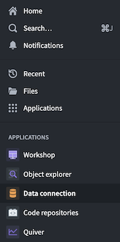
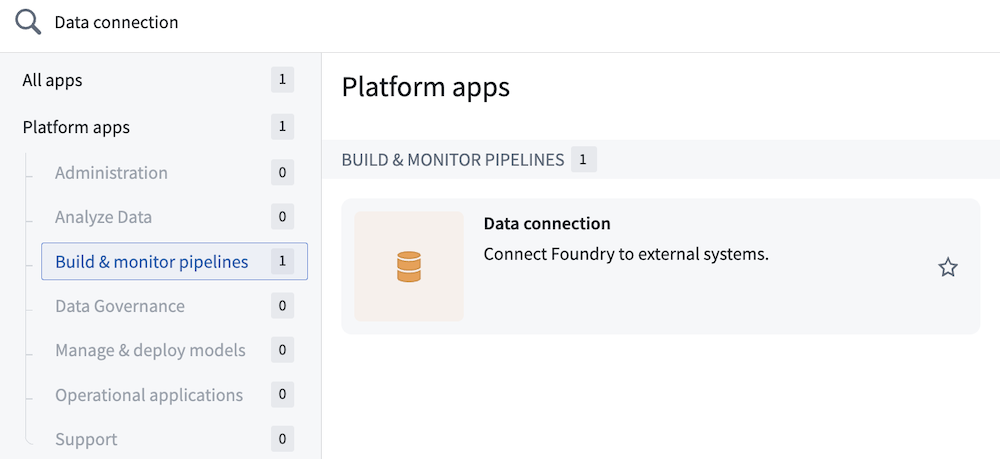

Data Connection is an application used to synchronize data from external systems and other Foundry instances for use in Foundry. Users can use Data Connection to sync data into Foundry for use in the data integration, modeling, and Ontology layers. Additionally, Data Connection enables setting up outbound connections to enable writeback to external systems via webhooks and data exports.
Access the Data Connection application by selecting the icon from the workspace navigation bar.

You can also find the Data Connection application by searching in the Applications Portal.

If you are connecting Foundry to your data for the very first time for your organization, get started by referring to the initial setup guide.
Foundry standardizes the data connection process with the following three principles:
Often, connecting data between systems is prone to failures that can be difficult to recover from. Issues out of the user's control in the external environment (e.g., poor network connectivity, disk failures, or unresponsive source systems) can affect data syncs, breaking downstream analytics pipelines as well. Incomplete or corrupt data is not only a technical challenge, but also potentially dangerous for the organization if it is used unnoticed or not available for urgent needs.
Foundry proactively addresses these common failure points with automatic retries upon failures, use of simple functions (e.g., filesystem and database syncs) to pull data in small batches with low complexity queries from the source systems, and an integrated data health monitoring system to alert on critical failures and surface other pipeline health issues. Combined, these features minimize the risk of incomplete or corrupt data.
Foundry is also distinguished by a philosophy that data should be ingested "as-is" from its most raw source, with no external preprocessing. In the absence of external preprocessing, the branched and version-controlled Foundry pipeline becomes the single source for all of the changes that happened to raw data on its journey to Ontology, and any issues that arise on that path can be identified and resolved inside the platform. Data Connection adheres to this design philosophy by supporting both tabular and file-based syncs and deliberately offering minimal options for transforming the data before it arrives in the destination dataset (the starting point of the Foundry pipeline).
Enterprises have a diverse, complex array of systems that add value individually and as an integrated system. Each system has its own requirements for integration and some systems require unique capabilities or features that would make it typically difficult to integrate.
Foundry provides out-of-the-box integration with well-known system types (e.g., relational databases, FTPS, HDFS, S3, SFTP, and local directories) as well as the flexibility to connect and sync data from new system types. In many cases, new systems can reuse an existing plugin or one with just minor changes. Core features (e.g., scheduling and uploading) are standardized so that only the connection itself needs to be adjusted.
Foundry also supports communication between Foundry enrollments via the dedicated Foundry connector. With this connector, one Foundry instance can be treated as a source on another, supporting batch and streaming syncs with incremental options.
Learn more about the full range of available source types.
Managing data connections between systems can be an involved process that puts a significant burden on administrators who are responsible for every step: syncing, authentication, scheduling and orchestration, and monitoring.
Foundry abstracts away this complexity with backend services that take on the bulk of the work as users set up and manage pipelines through a simple frontend user interface. This lowers the barrier of entry to a typically complex technical task, making it possible for more users to perform data connection.
:::callout{theme="success" title="Palantir Learning portal"} Try creating your first data connection with a relevant course on learn.palantir.com â. :::